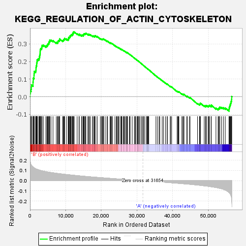
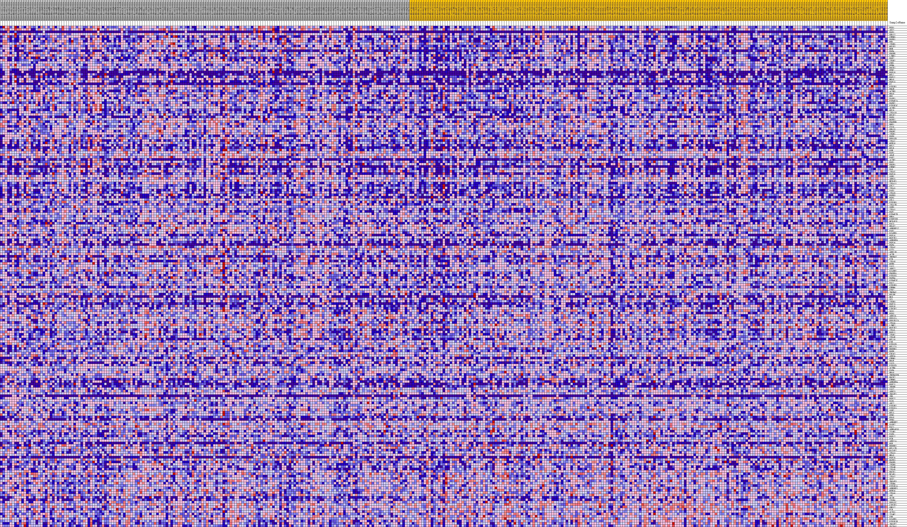
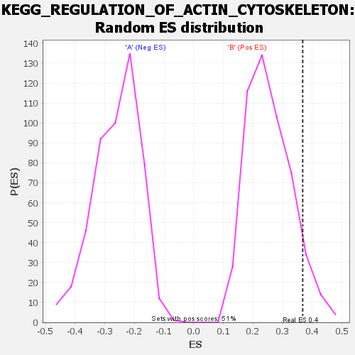

| | | Dataset | my.my.cls#B_versus_A.my.cls#B_versus_A_repos |
| Phenotype | my.cls#B_versus_A_repos |
| Upregulated in class | B |
| GeneSet | KEGG_REGULATION_OF_ACTIN_CYTOSKELETON |
| Enrichment Score (ES) | 0.36771768 |
| Normalized Enrichment Score (NES) | 1.4380858 |
| Nominal p-value | 0.076771654 |
| FDR q-value | 0.5618477 |
| FWER p-Value | 0.828 |
Table: GSEA Results Summary

Fig 1: Enrichment plot: KEGG_REGULATION_OF_ACTIN_CYTOSKELETON
Profile of the Running ES Score & Positions of GeneSet Members on the Rank Ordered List
| SYMBOL | TITLE | RANK IN GENE LIST | RANK METRIC SCORE | RUNNING ES | CORE ENRICHMENT | | 1 | FGD1 | na | 11 | 0.223 | 0.0192 | Yes |
| 2 | ABI2 | na | 103 | 0.179 | 0.0332 | Yes |
| 3 | FGF3 | na | 293 | 0.158 | 0.0436 | Yes |
| 4 | GNA12 | na | 380 | 0.152 | 0.0553 | Yes |
| 5 | CHRM3 | na | 397 | 0.150 | 0.0680 | Yes |
| 6 | FGFR1 | na | 835 | 0.134 | 0.0720 | Yes |
| 7 | FN1 | na | 839 | 0.134 | 0.0836 | Yes |
| 8 | ITGB5 | na | 903 | 0.132 | 0.0940 | Yes |
| 9 | MYLK3 | na | 905 | 0.132 | 0.1054 | Yes |
| 10 | MSN | na | 1123 | 0.127 | 0.1126 | Yes |
| 11 | FGF4 | na | 1124 | 0.127 | 0.1237 | Yes |
| 12 | PDGFB | na | 1154 | 0.126 | 0.1341 | Yes |
| 13 | LIMK1 | na | 1211 | 0.125 | 0.1440 | Yes |
| 14 | FGF2 | na | 1589 | 0.118 | 0.1476 | Yes |
| 15 | ITGB2 | na | 1670 | 0.116 | 0.1563 | Yes |
| 16 | CRKL | na | 1679 | 0.116 | 0.1662 | Yes |
| 17 | PFN4 | na | 1755 | 0.115 | 0.1749 | Yes |
| 18 | DOCK1 | na | 1882 | 0.113 | 0.1825 | Yes |
| 19 | PFN2 | na | 1887 | 0.113 | 0.1922 | Yes |
| 20 | FGF19 | na | 1959 | 0.112 | 0.2007 | Yes |
| 21 | MYL7 | na | 1989 | 0.112 | 0.2099 | Yes |
| 22 | FGF17 | na | 2251 | 0.108 | 0.2147 | Yes |
| 23 | MRAS | na | 2594 | 0.105 | 0.2177 | Yes |
| 24 | FGF13 | na | 2621 | 0.104 | 0.2263 | Yes |
| 25 | F2 | na | 2729 | 0.103 | 0.2334 | Yes |
| 26 | PIK3R1 | na | 2777 | 0.103 | 0.2415 | Yes |
| 27 | ENAH | na | 2835 | 0.102 | 0.2493 | Yes |
| 28 | ACTN3 | na | 2853 | 0.102 | 0.2579 | Yes |
| 29 | RRAS | na | 2873 | 0.102 | 0.2664 | Yes |
| 30 | RDX | na | 2972 | 0.101 | 0.2734 | Yes |
| 31 | WASF1 | na | 3261 | 0.098 | 0.2769 | Yes |
| 32 | PIP4K2A | na | 3323 | 0.098 | 0.2843 | Yes |
| 33 | FGFR2 | na | 3366 | 0.097 | 0.2920 | Yes |
| 34 | PIP5K1C | na | 3748 | 0.094 | 0.2934 | Yes |
| 35 | ACTN1 | na | 4444 | 0.089 | 0.2889 | Yes |
| 36 | MYL9 | na | 4715 | 0.087 | 0.2917 | Yes |
| 37 | ITGA10 | na | 4913 | 0.086 | 0.2957 | Yes |
| 38 | MYLK2 | na | 5027 | 0.085 | 0.3011 | Yes |
| 39 | FGF9 | na | 5255 | 0.084 | 0.3044 | Yes |
| 40 | MAPK1 | na | 5290 | 0.084 | 0.3111 | Yes |
| 41 | PDGFRB | na | 5494 | 0.083 | 0.3147 | Yes |
| 42 | BRK1 | na | 5521 | 0.083 | 0.3214 | Yes |
| 43 | CD14 | na | 5885 | 0.080 | 0.3219 | Yes |
| 44 | GNA13 | na | 6452 | 0.077 | 0.3186 | Yes |
| 45 | PDGFC | na | 7359 | 0.073 | 0.3089 | Yes |
| 46 | ITGB1 | na | 7715 | 0.071 | 0.3088 | Yes |
| 47 | FGF8 | na | 7808 | 0.071 | 0.3134 | Yes |
| 48 | PPP1CB | na | 7901 | 0.071 | 0.3179 | Yes |
| 49 | ITGA7 | na | 8170 | 0.069 | 0.3192 | Yes |
| 50 | MYH10 | na | 8286 | 0.069 | 0.3231 | Yes |
| 51 | MYL2 | na | 8302 | 0.069 | 0.3288 | Yes |
| 52 | MYLK | na | 9167 | 0.065 | 0.3192 | Yes |
| 53 | GSN | na | 9363 | 0.064 | 0.3213 | Yes |
| 54 | RAF1 | na | 9467 | 0.064 | 0.3251 | Yes |
| 55 | ARAF | na | 9623 | 0.063 | 0.3278 | Yes |
| 56 | PAK2 | na | 9709 | 0.063 | 0.3318 | Yes |
| 57 | ACTN2 | na | 10204 | 0.061 | 0.3283 | Yes |
| 58 | FGF1 | na | 10690 | 0.059 | 0.3249 | Yes |
| 59 | PDGFA | na | 10814 | 0.059 | 0.3278 | Yes |
| 60 | CHRM2 | na | 10849 | 0.059 | 0.3323 | Yes |
| 61 | WAS | na | 10868 | 0.058 | 0.3371 | Yes |
| 62 | ITGAX | na | 11093 | 0.058 | 0.3381 | Yes |
| 63 | FGF10 | na | 11197 | 0.057 | 0.3412 | Yes |
| 64 | SSH1 | na | 11208 | 0.057 | 0.3460 | Yes |
| 65 | ARPC5 | na | 11409 | 0.056 | 0.3474 | Yes |
| 66 | NCKAP1 | na | 11488 | 0.056 | 0.3509 | Yes |
| 67 | ITGA11 | na | 11765 | 0.055 | 0.3508 | Yes |
| 68 | CFL2 | na | 11812 | 0.055 | 0.3548 | Yes |
| 69 | ITGA5 | na | 12015 | 0.054 | 0.3559 | Yes |
| 70 | PAK3 | na | 12028 | 0.054 | 0.3604 | Yes |
| 71 | ITGA9 | na | 12141 | 0.054 | 0.3631 | Yes |
| 72 | FGFR3 | na | 12150 | 0.054 | 0.3676 | Yes |
| 73 | FGF5 | na | 12406 | 0.053 | 0.3677 | Yes |
| 74 | CFL1 | na | 13213 | 0.050 | 0.3578 | No |
| 75 | PIK3R5 | na | 13767 | 0.048 | 0.3521 | No |
| 76 | ITGA2B | na | 13783 | 0.048 | 0.3560 | No |
| 77 | SSH3 | na | 14483 | 0.046 | 0.3476 | No |
| 78 | ITGA1 | na | 14534 | 0.045 | 0.3507 | No |
| 79 | FGF7 | na | 14902 | 0.044 | 0.3480 | No |
| 80 | PIP4K2B | na | 14907 | 0.044 | 0.3518 | No |
| 81 | RHOA | na | 15025 | 0.044 | 0.3535 | No |
| 82 | PIKFYVE | na | 15107 | 0.044 | 0.3559 | No |
| 83 | NCKAP1L | na | 15184 | 0.043 | 0.3583 | No |
| 84 | RAC3 | na | 15440 | 0.043 | 0.3575 | No |
| 85 | RRAS2 | na | 15601 | 0.042 | 0.3583 | No |
| 86 | ARHGEF12 | na | 15666 | 0.042 | 0.3608 | No |
| 87 | PAK1 | na | 16214 | 0.040 | 0.3546 | No |
| 88 | DIAPH3 | na | 16444 | 0.040 | 0.3540 | No |
| 89 | FGF16 | na | 16643 | 0.039 | 0.3538 | No |
| 90 | MAP2K1 | na | 16959 | 0.038 | 0.3516 | No |
| 91 | ARHGEF6 | na | 17538 | 0.036 | 0.3445 | No |
| 92 | FGF14 | na | 17657 | 0.036 | 0.3455 | No |
| 93 | FGF6 | na | 17964 | 0.035 | 0.3432 | No |
| 94 | ITGAV | na | 18137 | 0.035 | 0.3431 | No |
| 95 | GIT1 | na | 18197 | 0.035 | 0.3451 | No |
| 96 | ARPC1B | na | 18243 | 0.034 | 0.3473 | No |
| 97 | ACTB | na | 18792 | 0.033 | 0.3404 | No |
| 98 | TMSB4Y | na | 18828 | 0.033 | 0.3427 | No |
| 99 | F2R | na | 19730 | 0.030 | 0.3293 | No |
| 100 | ITGA8 | na | 20024 | 0.030 | 0.3267 | No |
| 101 | MYH9 | na | 20108 | 0.029 | 0.3278 | No |
| 102 | VAV1 | na | 20346 | 0.029 | 0.3261 | No |
| 103 | ARPC2 | na | 20426 | 0.028 | 0.3271 | No |
| 104 | DIAPH2 | na | 20590 | 0.028 | 0.3267 | No |
| 105 | PDGFRA | na | 20618 | 0.028 | 0.3286 | No |
| 106 | PIK3CG | na | 21068 | 0.027 | 0.3230 | No |
| 107 | FGFR4 | na | 21598 | 0.025 | 0.3158 | No |
| 108 | PIP4K2C | na | 21693 | 0.025 | 0.3163 | No |
| 109 | RAC2 | na | 22472 | 0.023 | 0.3045 | No |
| 110 | PIK3R3 | na | 22479 | 0.023 | 0.3064 | No |
| 111 | CHRM4 | na | 22693 | 0.022 | 0.3046 | No |
| 112 | PTK2 | na | 22864 | 0.022 | 0.3034 | No |
| 113 | TMSB4X | na | 23104 | 0.021 | 0.3011 | No |
| 114 | MYLPF | na | 23822 | 0.019 | 0.2900 | No |
| 115 | MOS | na | 24207 | 0.018 | 0.2848 | No |
| 116 | VCL | na | 24364 | 0.018 | 0.2836 | No |
| 117 | ITGB3 | na | 24643 | 0.017 | 0.2802 | No |
| 118 | FGF23 | na | 24786 | 0.017 | 0.2792 | No |
| 119 | FGF18 | na | 24993 | 0.017 | 0.2770 | No |
| 120 | CYFIP2 | na | 25448 | 0.015 | 0.2703 | No |
| 121 | SOS1 | na | 25614 | 0.015 | 0.2686 | No |
| 122 | FGD3 | na | 25616 | 0.015 | 0.2699 | No |
| 123 | ARPC5L | na | 25784 | 0.015 | 0.2682 | No |
| 124 | PPP1CA | na | 26173 | 0.014 | 0.2625 | No |
| 125 | PPP1R12A | na | 26311 | 0.013 | 0.2612 | No |
| 126 | ITGA4 | na | 26473 | 0.013 | 0.2595 | No |
| 127 | LIMK2 | na | 26704 | 0.012 | 0.2564 | No |
| 128 | MAP2K2 | na | 27050 | 0.011 | 0.2513 | No |
| 129 | ITGAL | na | 27121 | 0.011 | 0.2510 | No |
| 130 | FGF11 | na | 27146 | 0.011 | 0.2515 | No |
| 131 | ITGB7 | na | 27191 | 0.011 | 0.2517 | No |
| 132 | ITGAE | na | 27334 | 0.011 | 0.2501 | No |
| 133 | MYL10 | na | 27872 | 0.009 | 0.2414 | No |
| 134 | CSK | na | 27986 | 0.009 | 0.2402 | No |
| 135 | PIK3CB | na | 28048 | 0.009 | 0.2398 | No |
| 136 | MYL12A | na | 28646 | 0.007 | 0.2299 | No |
| 137 | BDKRB1 | na | 29266 | 0.006 | 0.2194 | No |
| 138 | EGFR | na | 29493 | 0.005 | 0.2159 | No |
| 139 | CDC42 | na | 29589 | 0.005 | 0.2146 | No |
| 140 | ARPC4 | na | 29968 | 0.004 | 0.2083 | No |
| 141 | CHRM1 | na | 30082 | 0.004 | 0.2066 | No |
| 142 | BRAF | na | 30251 | 0.003 | 0.2039 | No |
| 143 | VAV3 | na | 30282 | 0.003 | 0.2037 | No |
| 144 | PIK3CD | na | 30315 | 0.003 | 0.2034 | No |
| 145 | ACTN4 | na | 30590 | 0.003 | 0.1988 | No |
| 146 | PAK4 | na | 30659 | 0.002 | 0.1978 | No |
| 147 | HRAS | na | 31126 | 0.001 | 0.1896 | No |
| 148 | TMSB4XP8 | na | 31149 | 0.001 | 0.1893 | No |
| 149 | ROCK2 | na | 31515 | 0.000 | 0.1829 | No |
| 150 | CHRM5 | na | 31782 | -0.000 | 0.1782 | No |
| 151 | ARHGEF4 | na | 31857 | -0.000 | 0.1769 | No |
| 152 | FGF21 | na | 32194 | -0.001 | 0.1711 | No |
| 153 | INSRR | na | 32721 | -0.003 | 0.1620 | No |
| 154 | VAV2 | na | 32723 | -0.003 | 0.1622 | No |
| 155 | ARPC3 | na | 32914 | -0.003 | 0.1591 | No |
| 156 | IQGAP1 | na | 33090 | -0.003 | 0.1563 | No |
| 157 | INS | na | 33154 | -0.004 | 0.1555 | No |
| 158 | FGF22 | na | 33286 | -0.004 | 0.1535 | No |
| 159 | WASL | na | 35297 | -0.009 | 0.1187 | No |
| 160 | APC2 | na | 35728 | -0.010 | 0.1119 | No |
| 161 | PIK3R2 | na | 36180 | -0.011 | 0.1049 | No |
| 162 | PIK3CA | na | 36393 | -0.012 | 0.1022 | No |
| 163 | SSH2 | na | 37069 | -0.014 | 0.0914 | No |
| 164 | MYL5 | na | 37433 | -0.014 | 0.0862 | No |
| 165 | PFN1 | na | 37990 | -0.016 | 0.0777 | No |
| 166 | KRAS | na | 38448 | -0.017 | 0.0711 | No |
| 167 | PFN3 | na | 38492 | -0.017 | 0.0719 | No |
| 168 | ARHGEF7 | na | 39307 | -0.020 | 0.0591 | No |
| 169 | WASF2 | na | 39425 | -0.020 | 0.0588 | No |
| 170 | RAC1 | na | 39710 | -0.021 | 0.0555 | No |
| 171 | ARHGAP35 | na | 41240 | -0.025 | 0.0306 | No |
| 172 | TIAM1 | na | 41430 | -0.025 | 0.0294 | No |
| 173 | PAK6 | na | 41601 | -0.026 | 0.0286 | No |
| 174 | FGF12 | na | 41748 | -0.026 | 0.0283 | No |
| 175 | PXN | na | 42568 | -0.029 | 0.0163 | No |
| 176 | ARPC1A | na | 42846 | -0.030 | 0.0140 | No |
| 177 | EGF | na | 43055 | -0.030 | 0.0129 | No |
| 178 | BDKRB2 | na | 43174 | -0.031 | 0.0135 | No |
| 179 | MYL12B | na | 43975 | -0.033 | 0.0021 | No |
| 180 | BAIAP2 | na | 44097 | -0.033 | 0.0029 | No |
| 181 | ITGA3 | na | 44700 | -0.035 | -0.0047 | No |
| 182 | NRAS | na | 44857 | -0.036 | -0.0044 | No |
| 183 | FGF20 | na | 46975 | -0.043 | -0.0382 | No |
| 184 | MAPK3 | na | 47515 | -0.045 | -0.0438 | No |
| 185 | PDGFD | na | 47569 | -0.045 | -0.0409 | No |
| 186 | ITGB8 | na | 47718 | -0.046 | -0.0395 | No |
| 187 | ITGAM | na | 47762 | -0.046 | -0.0363 | No |
| 188 | ITGAD | na | 48843 | -0.050 | -0.0511 | No |
| 189 | ROCK1 | na | 49209 | -0.052 | -0.0531 | No |
| 190 | BCAR1 | na | 49250 | -0.052 | -0.0493 | No |
| 191 | ITGA2 | na | 49551 | -0.053 | -0.0500 | No |
| 192 | SOS2 | na | 49991 | -0.055 | -0.0529 | No |
| 193 | IQGAP3 | na | 50170 | -0.056 | -0.0512 | No |
| 194 | ITGB4 | na | 50274 | -0.056 | -0.0481 | No |
| 195 | PIP5K1A | na | 50788 | -0.059 | -0.0521 | No |
| 196 | ARHGEF1 | na | 50795 | -0.059 | -0.0470 | No |
| 197 | MYH14 | na | 52130 | -0.067 | -0.0648 | No |
| 198 | ITGA6 | na | 52726 | -0.071 | -0.0692 | No |
| 199 | APC | na | 52881 | -0.072 | -0.0657 | No |
| 200 | SCIN | na | 53137 | -0.074 | -0.0637 | No |
| 201 | ITGB6 | na | 53210 | -0.075 | -0.0585 | No |
| 202 | PPP1CC | na | 53699 | -0.079 | -0.0603 | No |
| 203 | CYFIP1 | na | 54234 | -0.085 | -0.0624 | No |
| 204 | GNG12 | na | 54752 | -0.092 | -0.0635 | No |
| 205 | EZR | na | 55783 | -0.114 | -0.0719 | No |
| 206 | ACTG1 | na | 55844 | -0.116 | -0.0628 | No |
| 207 | TIAM2 | na | 55964 | -0.121 | -0.0544 | No |
| 208 | CRK | na | 56094 | -0.127 | -0.0456 | No |
| 209 | DIAPH1 | na | 56241 | -0.136 | -0.0364 | No |
| 210 | PIP5K1B | na | 56359 | -0.148 | -0.0256 | No |
| 211 | IQGAP2 | na | 56522 | -0.172 | -0.0136 | No |
| 212 | SLC9A1 | na | 56537 | -0.176 | 0.0015 | No |
Table: GSEA details [plain text format]

Fig 2: KEGG_REGULATION_OF_ACTIN_CYTOSKELETON
Blue-Pink O' Gram in the Space of the Analyzed GeneSet

Fig 3: KEGG_REGULATION_OF_ACTIN_CYTOSKELETON: Random ES distribution
Gene set null distribution of ES for KEGG_REGULATION_OF_ACTIN_CYTOSKELETON